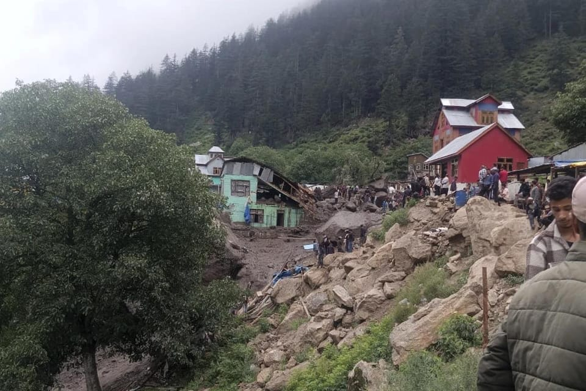

世界苦茶08月15日新闻 | 35条 | 特朗普將幾小時後與普京會談

特朗普將幾小時後與普京會談 | 中國七月經濟數據嚴重下滑 | 日本終戰80週年引發爭議 | 解放軍巡台常態化
歡迎關注SUBSTACK
每日三條新聞解析
苦茶数据
美元兑人民币：7.18（昨日7.17，前日7.18）
美元兑日元：147.01（昨日146.41，前日147.92）
上证指数：3696（昨日3685，前日3685）
标普500指数：6458（昨日6466，前日6445）
比特币：118133（昨日121989，前日119413）
布伦特原油：66.15（昨日65.98，前日66.23）
中国新闻
• 王毅会晤泰柬外长促互信 ：中国外长王毅星期四分别与泰柬两国外长会面。王毅强调，中国支持泰柬加强对话协商，重建互信。中国外交部在官网公布，王毅星期四在云南安宁，分别会见赴华出席澜湄合作外长会的泰国外长玛里，以及柬埔寨副首相兼外交大臣布拉索昆。中国外交部在介绍中泰外长会面细节时说，双方就泰柬边境局势交换意见。王毅说，中国支持泰柬双方加强对话协商，重建互信，重归于好，支持亚细安以“亚细安方式”解决好亚细安内部的问题。中国愿根据双方意愿提供必要协助。
• 官媒批武大校长“甩锅” ：中国名校武汉大学校长回应图书馆性骚扰案时，一句“还要等上级的安排”引发争议，官媒新华社时隔多日后不点名批评，“等上级通知”“听领导安排”是“向上甩锅”，损害中共和政府公信力。新华社星期三发布《舆情应对“唯上不唯实”是一种“向上甩锅”》的短视频评论。评论说，明明是职权范围内的分内事，非要等上级发话；明明是事实清楚，应及时回应的问题，偏要层层上报耗到舆论升温。一段时间以来，“等上级通知”“听领导安排”成了中国一些地方和部门在面对舆情时的高频用语，这种行为实质是一种“向上甩锅”。
• 名古屋访南京计划延期 ：日本媒体称，名古屋市议员团原定本月下旬访问友好城市南京的计划，因中方意向而延期。南京市方面未给出明确原因，但告知了新市长就任时期未定的信息。日本共同社星期三引述消息人士报道，隶属跨党派议员联盟的名古屋市议员团原计划本月下旬前往南京访问，并转交名古屋市长广泽一郎表达恢复交流意愿的亲笔信。2012年，时任名古屋市长河村隆之发表否认南京大屠杀的言论后，两市的官方交流暂停至今。
• 经济日报称美贸策最大变数 ：中国国务院主办的《经济日报》在头版刊文称，美国反复摇摆的贸易政策仍是最大变数，唯有看准了就抓紧干，能多干就多干一些，尽快形成一定改革成果或基础，才能为下阶段国际经贸斗争打开更多空间。《经济日报》星期四在头版刊登署名“金观平”（经济日报观点评论）的文章《中国经济顶住压力奋楫前行》。文章称，面对外部环境发生的深刻复杂变化，以国内大循环的内在稳定性和长期成长性对冲国际循环的不确定性，全国统一大市场建设的重要性愈加凸显。
• 司法部强调行政检查有度 ：中国司法部明确表示行政检查工作“该严则严、当宽则宽”，同时强调决不能“走过场”。据新华社报道，司法部认真贯彻落实中共中央、国务院决策部署，积极开展规范涉企行政执法专项行动，坚持在法治轨道上推进行政检查工作，“该严则严、当宽则宽”。专项行动截至目前，乱检查得到有效遏制，今年上半年全中国行政检查数量较去年同期下降30%以上，入企入户检查减少48.3万次。据介绍，国务院办公厅印发的《关于严格规范涉企行政检查的意见》，针对企业和群众反映强烈的检查频次过高、检查事项多等突出问题，作出系统全面规范。
• 解放军大规模巡台常态化 ：中国大陆上周连续两天出动共百余架次军机舰进入台湾周边海域，却未高调宣传。台湾军事学者指出，解放军这类较大规模的演训今年已常态化上升到每月四五次，目的是实战练兵；且结合无人机、公务船越过台海中线，寻求建立对台海的管辖事实。解放军在上星期四和星期五连续两天出动大规模军机舰进入台海周边。根据台湾军方统计，自7日清晨6时起的48小时内，共侦得111架次大陆军机、12艘次军舰，以及六艘次公务船在台海周边活动。其中，军机方面就包括歼16、空警500等各型主、辅战机及无人机，并有85架次军机进入台湾防空识别区。台湾国防部将这一波行动界定为“联合战备警巡”，但中国大陆方面并未做出相关宣布，也没有官媒宣传。
亚太印太新闻
• 8月15日是日本投降80周年，日本政府主办的“全国战殁者追悼仪式”在东京都千代田区的日本武道馆举行： 日本首相石破茂在致辞中称：“不能再次弄错前进的道路。如今必须再度把对那场战争的反省和教训铭刻于心。”首相在致辞中加入“反省”一词是第二次安倍内阁以来13年首次，但其中并未提及对亚洲各国的加害责任。全体人员在正午默哀。天皇称“希望今后继续讲述战时和战后的苦难，面向未来继续祈愿和平与人们的幸福”，今年也提到了“深刻反省”。当天，农业水产大臣小泉进次郎和财务大臣加藤胜信参拜了靖国神社，是首次有现任日本内阁高官确认参拜。石破茂虽未参拜，但以自民党总裁身份自费供奉“玉串料”。此外还有多名国会议员参拜。韩国政府就日本首相向靖国神社献祭品深表遗憾。中国驻日大使馆批评日本政客参拜靖国神社“再次反映出日方对待侵略历史的错误态度，反映出日本军国主义始终阴魂不散”。
• 大阪地铁故障3万人滞留 ：直通日本大阪关西世博会场“梦洲”的大阪地铁中央线星期三晚因电路出问题瘫痪约八个小时，导致约三万名世博会游客和工作人员滞留在会场内度过夏季闷热的漫漫长夜。本周为日本盂兰节长假，世博会人潮进入开幕后最高峰。但周三晚9时30分左右，世博会唯一的列车服务告停，一直到第二天清晨5时许恢复全面运营。主办当局说，因梦洲站暂停服务，当晚约有3万人滞留世博会场及周边地区过夜。当局开放一些展馆给无法回家的游客过夜。大阪府和世博会协会像应对灾害一样，向民众分发饮用水、食物和避难物资。
• 台媒称国民党主席人选未定 ：台中市长卢秀燕或不会参选国民党主席，前中广董事长赵少康说，蒋万安、郝龙斌、郑丽文也是可能选项。据台湾《上报》报道，赵少康星期三受访说，若卢秀燕2028年打算选总统，就应该接受挑战、承接党主席一职，这也是蓝营支持者想看到的。他说，如果卢秀燕执意不选，可能由现任主席朱立伦续任，另外，台北市长蒋万安、前台北市长郝龙斌、前立委郑丽文也是可能选项。
• 印尼免费餐致大规模中毒 ：印度尼西亚中爪哇省斯拉根镇发生大规模食物中毒事件，360多人在食用学校午餐后病倒。这也是总统普拉博沃的旗舰项目免费营养餐计划推行以来，发生的最大规模食物中毒事件。路透社报道，今年1月推行免费营养餐计划以来，印尼各地已发生多起群体食物中毒事件，累计影响超过1000人。斯拉根地方长官西吉特说，共有365人出现身体不适，目前已将食物样本送往检验。如果需要，政府将承担全部医疗费用。
• 巴基斯坦组建火箭部队 ：巴基斯坦总理谢里夫宣布，巴基斯坦将组建一支新的军事部队来监管其导弹能力。法新社报道，谢里夫星期三晚上在首都伊斯兰堡举行的独立日仪式上，宣布成立“火箭部队司令部”。他在仪式上说：“这个部队将配备现代科技，具备从各方面打击敌人的能力。这将提升我们的常规作战能力。”
• 金与正否认拆扩音器 ：朝鲜领导人金正恩的胞妹金与正否认韩国军方关于平壤拆除边境宣传扩音器的消息。在朝鲜中央通讯社星期四刊登的一份英文声明中，金与正强调，韩国为缓和紧张局势所做的努力毫无意义。法新社引述她的话说：“我们从未拆除过边境地区安装的扩音器，也不愿意拆除它们。” （翻評：肉包子打狗。）
• 克什米尔暴雨致37死 ：印控克什米尔吉什德瓦尔地区突降暴雨引发山洪，造成一偏远村落至少37人死亡、50人重伤，另有至少50人失踪。
科技新闻
• DeepSeek因华为芯片推迟R2 ：英国媒体称，中国人工智能起步公司深度求索的R2模型，因使用华为晶片训练遇到问题而推迟发布。路透社引述英国《金融时报》报道，多名消息人士称，DeepSeek在1月发布R1型号后，被当局鼓励使用华为晶片，而非英伟达的产品，但却因华为晶片的技术问题，推迟了R2新模型的发布，这凸显北京试图取代美国技术的局限性。另据腾讯科技报道，市场再度传出DeepSeek R2即将发布的消息，预计时间窗口为8月15日至30日。
• 比特币再创新高 ：在美国股市持续创新高的带动下，比特币价格星期三再创历史新高，投资者在全球市场的风险偏好显著升温。彭博社报道，比特币在纽约时间星期三晚上突破12万3500美元，超过7月14日创下的12万3205.12美元的纪录高位。星期四上午8时38分，比特币报12万4000美元。比特币过去一年稳步上涨，部分受惠于美国总统特朗普推动的友好立法环境。包括塞勒领导的Strategy在内的上市公司，通过大量储备比特币来提升需求。这一策略也蔓延至以太币等较小竞争对手，带动数码资产普涨。
• 甲骨文与谷歌达成AI合作 ：甲骨文和谷歌母公司周四表示，他们的云计算部门已达成一项协议，通过甲骨文的云计算服务和商业应用提供谷歌的Gemini人工智能模型。这项交易类似于甲骨文在六月份与埃隆·马斯克的 xAI 达成的协议，将让软件开发人员在使用甲骨文云的同时，利用谷歌的模型来生成文本、视频、图像和音频。使用甲骨文各种应用处理企业财务、人力资源和供应链规划的企业，也将能够选择在这些应用内使用谷歌的模型。这些甲骨文客户将能够使用与支付甲骨文服务相同的甲骨文云积分系统来支付谷歌人工智能技术费用。
财经新闻
• 中国7月商品零售34276亿元、同比增4.0%： 餐饮收入4504亿元、同比增1.1%。社零增速大幅低于预期，是去年12月以来最慢。7月规上工业增加值同比增5.7%、环比增0.38%，是去年11月以来最慢。7月城镇调查失业率5.2%，同比去年持平。7月末商品房待售76486万平、同比多3.4%，其中住宅40536万平、同比多5.9%。7月CPI同比持平、环比涨0.4%，扣除食品能源后同比跌0.8%。PPI同比降3.6%、环比跌0.2%。 （翻評：7月經濟數據真的很糟糕。）
• 中印商谈恢复边境贸易 ：中国与印度正在商谈恢复当地生产商品的边境贸易，标志着这两个亚洲邻国缓慢但稳步缓和双方长期紧张局势的最新举措。这种贸易之前已经暂停逾五年。彭博社引述新德里知情官员说，双方均提议重启经过两国边境指定地点的贸易，目前仍在开展双边讨论。由于事未公开，知情官员要求匿名。中国外交部星期四说，北京方面愿就此事与印度加强沟通协调。外交部在回复彭博新闻社的询问时说，长期以来，中印边境贸易在改善两国边民生活方面发挥了重要作用。
• 据悉特朗普政府正商讨入股英特尔公司： 据知情人士透露，特朗普政府正在与英特尔进行谈判，以让美国政府入股这家陷入困境的芯片制造商，助力这家公司扩大国内制造业。这笔交易将有助于支持英特尔在俄亥俄州的工厂中心计划。英特尔曾承诺将该工厂变成世界上最大的芯片制造工厂，尽管这一承诺一再被推迟。知情人士说，这些计划源于本周特朗普与英特尔CEO的一次会面。知情人士表示，双方的想法是由美国政府支付股份，细节正在整理中。并警告称，计划仍不确定，潜在的持股规模尚不清楚。谈判仍有可能在未达成任何协议的情况下结束。
• 桥水基金清空全部中国股票投资持仓： 由雷·达利欧创立的全球最大的对冲基金管理公司之一的桥水基金在第二季度出售了其在中国公司的全部持股，这标志着地缘政治紧张局势下的一次重大撤资。最新的提交给美国证券交易委员会的13F表格显示，该公司以14亿美元的价格出售了其在16家中国公司的股份，这使其多年来首次没有持有中国股票。
• 中国拟动员央企收购滞销房 ：知情人士说，中国正计划动员央企，从陷入困境的房地产开发商手中收购滞销房屋。彭博社星期四引述知情人士报道，监管机构计划要求包括中国信达资产管理公司在内的一些大型国有企业和不良资产管理公司，协助消化过剩住房。其中一名知情人士说，这些公司将被允许动用央行去年为这项计划拨付的3000亿元人民币资金。
• 美联储降息预期推高金价 ：市场密切关注美国联邦储备局会否在9月启动降息，加上受美元走弱影响，黄金价格连续第三个交易日上涨。不过，目前已回落至3390美元关口附近。截至星期四下午5时10分，现货黄金下跌0.43%至每安士3393.60美元。美国7月份消费价格指数小幅上涨，增强市场对美联储在下个月降息的预期。美国财政部长贝森特声称，美联储很可能会降息50个基点。
• 瑞士民调反对关税让步 ：民意调查结果显示，尽管美国征收的高额关税可能伤害瑞士经济，但大多数瑞士人反对作出让步。瑞士媒体星期三引述的民调结果显示，近三分之二受访者认为，即便是美国对瑞士输美商品征收高达39%的进口关税，瑞士亦不应屈服于压力。这项民调由英国舆观调查公司于8月5日至11日进行，共1260名瑞士人参与。三分之二的受访者认为新关税将对经济造成严重冲击，仅有5%的受访者认为瑞士经济不会或几乎不会因此受到损害。
• 中美谈判拖延中国转购巴西大豆 ：由于中美贸易谈判拖延，中国买家在关键采购季锁定巴西大豆，美国大豆出口商面临错失数十亿美元对华销售额的风险。据路透社报道，三名贸易商称，中国进口商已完成9月份大豆船货的预订，总量约800万吨，全部来自南美。贸易商称，中国买家也已提前锁定10月份约400万吨大豆的进口量，同样来自南美。
• 中国如何成为清洁能源行业主导者： 纽约时报报道，2000年，中国的申请人提交了18项分析人士认为具国际竞争力的清洁能源专利。到2022年，该领域中国的申请人提交的专利超过5000项。20多年来，中国在为未来能源领域，太阳能、风能、电池和电动汽车，持续产出创新设计，已遥遥领先于其他国家。
俄乌战争
• 俄乌交换各84战俘 ：俄罗斯与乌克兰星期四进行新一轮战俘交换，双方各自移交84名战俘。俄罗斯国防部星期四在社媒平台Telegram上说，84名俄军人员从乌克兰控制区返回。这次互换战俘是在阿联酋斡旋下进行的，获释的俄方人员正在接受“心理和医疗援助”。
• 普特会将谈俄乌与经贸 ：克里姆林宫说，俄罗斯总统普京和美国总统特朗普在来临的会谈上，预计将讨论俄美经济关系中“巨大的未开发潜力”，以及结束俄乌战争的前景。路透社报道，俄罗斯总统助理乌沙科夫星期四说，普京与特朗普在美国阿拉斯加举行的会谈将于莫斯科时间星期五晚上10时30分开始。乌沙科夫对媒体说，两名领导人将在翻译的陪同下先进行一对一对话，然后两国代表团按照“五对五”模式加入会谈。会谈结束后，普京和特朗普将举行联合记者会。
• 俄疑封锁WhatsApp服务 ：美国科技巨头Meta属下的WhatsApp说，俄罗斯正试图封锁WhatsApp的服务。路透社报道，俄罗斯已开始限制Telegram和WhatsApp的部分通话，指责这些外国平台在涉及欺诈和恐怖主义案件时，未能向执法部门提供信息。WhatsApp星期四发布声明说：“WhatsApp是一个私密、端到端加密的通讯工具，它抵制政府试图侵犯人们享有安全通信的权利。这就是为什么俄罗斯试图阻止超过1亿名俄罗斯人使用它的原因。
• 俄或测试海燕核动力导弹 ：路透社引述消息人士说，即便俄罗斯总统普京正准备与美国总统特朗普即将就乌克兰问题举行会谈，俄罗斯似正在准备测试海燕新型核动力巡航导弹。路透社星期三报道，加利福尼亚州米德尔伯里国际研究学院的杰弗里·刘易斯和弗吉尼亚州CNA研究分析机构的德克尔·埃弗利特分别通过研究地球成像公司行星实验室最近几周拍摄的图像，得出了各自的评估结论。他们一致认为，这些照片显示，位于巴伦支海新地岛潘科沃试验场的活动十分活跃，包括与先前进行的9M730“海燕”导弹试验相关的人员、设备、舰船和飞机的增加。
• 泽连斯基称欧美谈俄原则 ：乌克兰总统泽连斯基说，欧洲和美国领导人就与俄罗斯谈判原则达成五项共识。新华社引述乌克兰国家通讯社星期三的报道说，正在德国首都柏林访问的乌克兰总统泽连斯基在与德国总理默茨举行的联合新闻发布会上称，五项共识包括乌方必须直接参与俄乌冲突的和平解决，与乌克兰有关的一切只能与乌方讨论，应筹备召开乌美俄三方会谈，必须停火并明确对乌克兰的安全保障，若俄方不同意停火则应加强对俄制裁。泽连斯基称，当天他和默茨一起与美国总统特朗普、欧盟委员会主席冯德莱恩、北约秘书长吕特以及芬兰总统斯图布、法国总统马克龙、意大利总理梅洛尼和波兰总统纳夫罗茨基等举行了视频会晤。
• 普特会将重点谈乌克兰危机 ：俄罗斯总统助理乌沙科夫8月14日说，普京和特朗普的会晤将于莫斯科时间15日22时30分开始。两人将在翻译的陪同下先进行一对一对话，然后两国代表团按照“5对5”模式加入会谈。会谈结束后，普京和特朗普将举行联合新闻发布会。乌沙科夫说，两人会晤核心议题是解决乌克兰危机。会谈的持续时长将取决于讨论进展情况，双方将在面对面会晤后共进工作餐，之后再继续会谈。双方还将讨论在经济领域和全球安全问题上的双边合作。普京14日在与政府高级官员开会时称赞特朗普政府正“为停止敌对行动做出相当积极和真诚的努力”，以“达成对冲突各方都有利的协议”。普京还称，俄罗斯可以与美国就核军备控制达成协议。一名东欧高级官员表示，普京将试图通过向特朗普提供核军备控制或者与商业相关的可能进展来分散特朗普在谈判中对乌克兰的注意力，“希望特朗普不会被俄罗斯人愚弄”。泽连斯基14日在伦敦会见英国首相斯塔默。两人在唐宁街10号外热烈拥抱，展示其紧密关系。泽连斯基会后表示，双方讨论了对阿拉斯加会议的期望、可能的前景以及对乌克兰的安全保障。
国际新闻
• 以色列拟建争议区住房 ：以色列财政部长斯莫特里赫宣布，他计划批准在耶路撒冷以东和约旦河西岸犹太人定居点马阿勒阿杜明之间备受争议的“E1区”建造3401套住房，此举旨在“葬送巴勒斯坦国构想”。斯莫特里赫星期三发表声明称，批准“E1区”的建设计划是自本届以色列政府成立以来开始实施的“事实上主权计划”的一部分。经历长期的国际压力和冻结措施后，以色列将“打破常规”，使马阿勒阿杜明与耶路撒冷相连接，这将加强以色列在这一地区的“主权”。新华社引述《以色列时报》当天的报道说，在所谓的“E1区”扩建犹太人定居点长期以来一直引发国际社会担忧。此举将把约旦河西岸划分为南北两个区域，并阻碍连接东耶路撒冷、伯利恒和拉姆安拉的巴勒斯坦区域的发展。
• 欧洲热浪山火持续 ：欧洲正经历新一轮热浪，西班牙、德国、意大利和法国多地发布高温预警。多地气温12日突破40摄氏度，西班牙部分地区最高气温达44摄氏度。西班牙、葡萄牙、希腊、土耳其和巴尔干半岛等地山火持续，高温与火灾已造成至少4人死亡，数千人被迫撤离，不少旅游胜地遭到破坏。
• 英限制色情网站流量大降 ：BBC 新闻报道的数据显示，自从英国对网络平台实施强制年龄验证要求以来，热门色情网站的英国访客数量大幅减少。根据分析公司 Similarweb 的数据，7月24日至8月8日期间，Pornhub在英国的流量下降了47%，两周内失去了超过一百万访客。同一时期，XVideos 的流量也下降了 47% ，而 OnlyFans 的英国流量下降了 10%。Similarweb的数据还发现，相比之下，一些规模较小、监管较松的色情网站的访问量有所增加。然而，大多数在线平台实施的年龄验证系统都可以通过VPN轻松绕过，因为VPN会使用海外 IP 掩盖用户位置。
• MAGA阵营欲与马斯克和解 ：MAGA向马斯克发出一条新信息：我们希望你回来。美国副总统万斯在最近接受采访时表示：“我希望到中期选举的时候，他能重新回到阵营中来。”尽管马斯克离开了美国政府效率部，并与特朗普就大而美法案爆发过激烈争执，甚至威胁组建可能分流共和党选票的第三政党，但多位知名MAGA阵营人物已开始呼吁与马斯克和解。这些人士强调，马斯克是特朗普2024年胜选的关键推手。在共和党面临苦战的中期选举中，获得这位全球首富的资源支持将至关重要。虽然共和党今年募款表现强劲，与特朗普关联超级政治行动委员会MAGA在2025上半年已募得1.77亿美元，但马斯克的资金注入将如虎添翼。